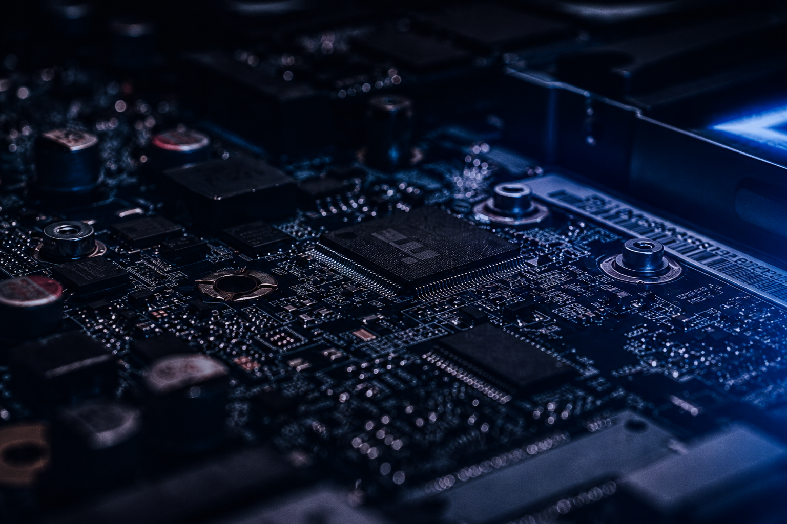

Reparamos lo
que otros
no pueden.
Especialistas en reparación de computadoras e impresoras. Venta de equipos, notebooks, insumos y componentes con garantía real.
+10.000
Equipos reparados
+25 años
De experiencia
98%
Satisfacción

Todo lo que tu equipo necesita
Técnicos con más de 30 años de experiencia y equipamiento de diagnóstico profesional.
Reparación de Computadoras
Diagnóstico y reparación de PCs y notebooks. Placa madre, fuentes, pantallas, teclados y más.
Envío a domicilioReparación de Impresoras
Servicio técnico para Epson, HP, Canon, Brother. Cambio de cabezales, mantenimiento de tinta y carga de cartuchos.
Todas las marcasMantenimiento Preventivo
Limpieza profunda, actualización de software y revisión de componentes para alargar la vida útil de tu equipo.
Cuidá tu equipoInstalación de Software
Windows, drivers, antivirus y programas de productividad. Migración de datos y configuración completa del sistema.
Windows + OfficeRecuperación de Datos
Recuperamos archivos borrados o de discos dañados. Servicio confidencial con alta tasa de éxito.
Alta tasa de éxitoServicio a Domicilio*
Asistencia técnica para particulares, empresas e industrias.
Olavarría y la zona.